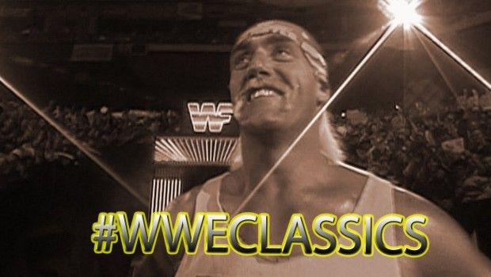
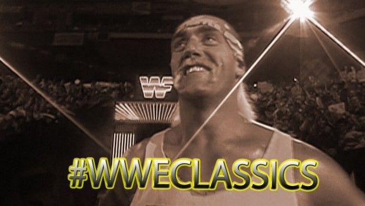

Hulk Hogan, born Terry Eugene Bollea on August 11, 1953, is one of the most iconic figures in professional wrestling history. Bursting onto the scene in the early 1980s, Hogan became the face of WWE (then WWF) and played a major role in transforming it into a global entertainment empire. With his larger-than-life persona, signature yellow and red attire, and catchphrase — “Whatcha gonna do when Hulkamania runs wild on you?!” — Hogan led WWE through the Golden Era. He headlined the first several WrestleMania events, including the legendary match against Andre the Giant at WrestleMania III, which drew over 93,000 fans. Hogan's influence extended beyond the ring; he helped bring wrestling into mainstream pop culture, appearing in movies, TV shows, and commercials. His values of training, prayers, and vitamins made him a hero to millions of fans, known as Hulkamaniacs. Hogan is a 6-time WWE Champion and was inducted into the WWE Hall of Fame twice — first in 2005 as an individual, and again in 2020 as a member of the revolutionary group nWo. His legacy lives on as one of the most recognizable and influential superstars in WWE history — a true icon who helped build the foundation of modern wrestling.